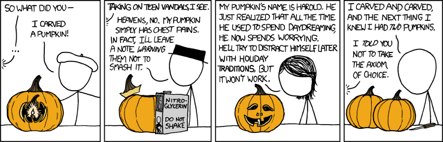

MaxEnt
...in ecology & evolution
MaxEnt in a nutshell
“(A) The prior probabilities represent our prior information, and are to be determined, not by introspection, but by logical analysis of that information.
(B) Since the final conclusions depend necessarily on both the prior information and the data, it follows that, in formulating a problem, one must specify that prior information to be used just as fully as one specifies the data.
(C) Our goal is that inferences are to be completely objective in the sense that two persons with the same prior information must assign the same prior probabilities.”
- Jaynes' Logic of Science p. 373.
MaxEnt in a nutshell
Entropy is {disorder, ignorance}.
MaxEnt in a nutshell
Knowing \(x\)'s mean we get the exponential.
MaxEnt in a nutshell
Knowing \(x\)'s mean and variance we get the normal distribution.
MaxEnt in a nutshell
- The gist of it: maximizing entropy is maximizing ignorance.
- Jeffreys prior: invariance under reparameterization.
- Minimum description length: minimizing complexity (Occam's razor)
METE
...
Mathematically proven?
“[...] we re-emphasize that MaxEnt is a mathematically proven method for inferring the most likely probability distribution if our knowledge about that distribution can be described as a set of constraints on the distribution” - Harte et al. (2008).
...but proven under what system?

“No Free Lunch Theorem” (Wolpert, 1997)
Alternatives to MaxEnt
Machine learning as a second order process
\[\mbox{human} \mapsto (m: x \mapsto y),\] \[\mbox{human} \mapsto (a: x_0 \mapsto (m: x_1 \mapsto y)).\]Support Vector Machines

1. Maximizing margins
Gaussian Processes
2. Bayesian form of SVMs (Murphy 2011), so it's better! Well no... Scales as \(\mathcal{O}(n^3)\) to the number of data points.
Artificial Neural Networks
3. Arguably the most effective branch of machine learning. Axioms, what's that?
4. Getting a good model requires the following: tweaking, sweat, blood, and luck.